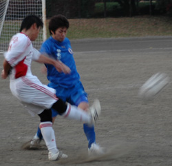

|
OiFuto, Saturday 1st December,
Another game, another narrow defeat. The Saitama Jets are a team who are striving to keep their season alive to the very end with another exciting relegation battle. The Jets aren’t panicking yet, with over half the season still to play there is still time to force a couple of scrappy wins and prolong the agony, or if you prefer, adventure, for yet another season. Proof of the Jets relaxed attitude was offered by the fact that with only five minutes to go before kick off only 10 players (and no goal keeper) were in attendance which meant no proper warm-up – but to be fair, it was sunny, so who needs to warm up? You can get warm just walking from the station! The Jets were a full eleven by kick off but due to some ‘communication gremlins’ were still without a ‘keeper – a situation which was not going to improve and so Yasu Suyama stepped up to wear the gloves (which weren’t really necessarily being it was so warm) and produced a faultless performance on his league debut between the sticks. Thank you, Yasu.
Last season the Jets beat the Swiss on this ground and the Swiss match reporter chose to ignore the game and instead pen a tribute to Oi Futo as a footballing venue. This writer will resist such a dubious temptation and concentrate on the game.
The Swiss started extremely well, kicking off and passing the ball around. Then they passed it a bit more and then some more and just as the Jets’ players were about to call for a second ball to be allowed on the pitch, the Swiss allowed the blue shirts a few touches. Thanks. Despite the dominance of possession in the opening stages the white shirts were unable to create any chances and slowly the Jets came into the game and soon it was a reasonably even contest of few chances. The first attempt on goal must have come after about 25 minutes – a snap shot from the swiss, volleyed from the edge of the area, which although it was straight at him was powerful and Suyama did well to turn it over the crossbar. A few minutes later and a lob into the box looked like it might drop into the goal and the stand ‘keeper did well to keep his eye on the ball and, again, help it over the bar. The central defensive partnership of Rayner and Hembise did well to limit the danger of the big Swiss target man who, inevitably, won lots of headers and flicks but couldn’t manufacture a sight of goal for himself or his team mates. The Jets’ best chance fell to Keating following a good passing move involving Sasaki, Gildart and Loren, but the midfielder hurried his shot when he had more time and scuffed weakly into the side-netting. Half time saw the Jets’ favourite score-line of 0 – 0.
The Second half was much the same as the first but with the added excitement of three goals and a clear penalty that wasn’t given. The Swiss, it has to be said, do keep the ball well and have good wide players who hug the touchline and always seem to put in excellent crosses. Just when it seems like they are boxed in with no passes left, the ball will be sent out to the other side of the pitch, where it seems that the chap walking his dog is the only person around for miles, only there is no dog and the chap is in fact the Swiss winger who proceeds to make ground and whip in a dangerous cross. Once again tribute must be paid the the defence for dealing with the height of the Swiss striker and the procession of decent crosses so well.
The game was starting to open up and the Swiss got in behind the Saitama defence on one or two occasions in the first 15 minutes of the second half, but were unable to test the ‘keeper. The Jets, looking to win the ball in midfield and use the pace of Loren to counter attack, put together another rare, but good, passing move and the American was away down the right flank, cutting back inside the penalty box he was brought down by a stray leg snaking out for the ball. Everyone stopped for a moment awaiting the inevitable whistle, which turned out to be not so inevitable. Soon after the Swiss went in front; their big striker getting free inside the box and finishing clinically on the turn. Minutes later it was two as a ball from the Jet’s left was all too easily converted at the back post giving Suyama no chance. 2 – 0 down, must be time to start playing properly! Well, not properly, but a bit better perhaps. The Jets made a game of it and Kobayashi, on as a halftime substitute after recovering from his broken rib, spotted Loren’s run and played a penetrating ball down the left wing which the American latched onto, held off a challenge and finished with a flourish from 15 yards, to make it 2 – 1.
The Jets pressed some more and created a number of good attacking situations but couldn’t quite find the pass or the shot to level the game and the Swiss held on for the 3 points which, in all honestly, they just about deserved, but only just.
Report by Rob Keating
|